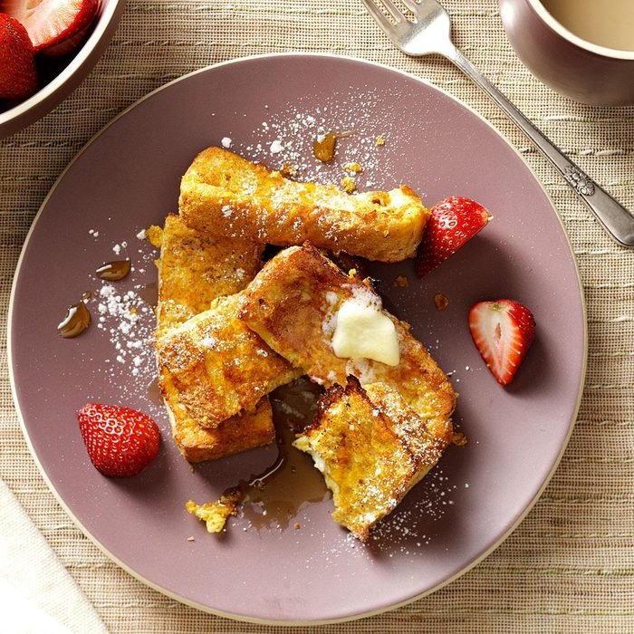

French Toast Sticks

Ingredient:
- 2 tablespoons sugar
- 1 cup 2% milk
- 1 teaspoon vanilla extract
- 1/4 to 1/2 teaspoon ground cinnamon
- 4 large eggs
- 6 slices day-old Texas toast
- 1 cup crushed cornflakes, optional
- Confectioners' sugar
- Maple syrup
Steps:
- Cut each piece of bread into thirds; place in an ungreased 13x9-in. dish. In a large bowl, whisk eggs, milk, sugar, vanilla and cinnamon. Pour over bread; soak for 2 minutes, turning once. If desired, coat bread with cornflake crumbs on all sides.
- Place in a greased 15x10x1-in. baking pan. Freeze until firm, about 45 minutes. Transfer to an airtight freezer container and store in the freezer.
- To use frozen French toast sticks: Preheat air fryer to 350°. Place desired number on greased tray in air-fryer basket. Cook for 3 minutes. Turn; cook until golden brown, 2-3 minutes longer. Sprinkle with confectioners' sugar if desired. Serve with syrup.